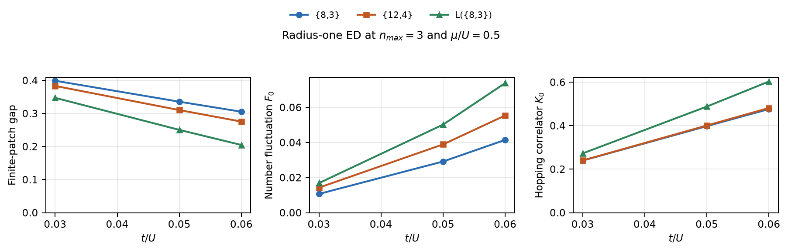
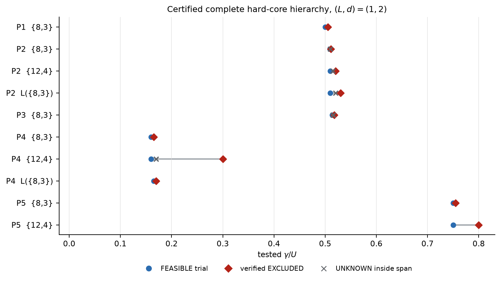

Truncated Bose–Hubbard gap calculations
Results for Targets 1 and 2 of Quantum Harness issue #92
1. Scope and status
We studied the occupation-truncated Bose–Hubbard Hamiltonian with U=1. Target 1 is the atomic limit t=0, μ=0.5. Target 2 consists of five parameter points on {8,3}, {12,4}, and L({8,3}).
Status: Target 1 is reproduced. For Target 2, finite-patch ED is complete for nmax=1,2,3, while independently certified thermodynamic results currently cover the complete hard-core level nmax=1, (L,d)=(1,2), in the U(1)-invariant sector.
Finite ED and thermodynamic hierarchy results are reported separately. ED describes small open patches and is not used as a thermodynamic bound.
2. Target 1: atomic limit
At t=0 and μ=0.5 the Hamiltonian is a sum of independent onsite terms. The ground state has one boson per site. Removing one boson costs 0.5; for nmax≥2, adding a second boson also costs 0.5. Therefore Δbulk=0.5, ρ₀=1, F₀=0, and K₀=0.
| Calculation | Coverage | Gap result | Local observables |
|---|---|---|---|
| Analytic product state | nmax≥2 | Δ=0.5 exactly | ρ₀=1, F₀=0, K₀=0 |
| Radius-one finite ED | 3 graphs; nmax=1,2,3 | finite-patch gap=0.5 | ρ₀=1, F₀=0, K₀=0 |
| Atomic state-polynomial SDP | nmax=1,2,3 | numerical [0.5, 0.5000009537] | ρ₀=1 and F₀=0 to solver tolerance |
| Complete Julia hierarchy | nmax=1; (L,d)=(1,2) | γ=0.49 FEASIBLE; γ=0.51 EXCLUDED | 0.999998986≤ρ₀≤1.00000017 |
ED conclusion
The radius-one ED calculation gives the same gap 0.5 and the same local observables on all three graphs and at all three cutoffs. This is the expected conclusion: at t=0 the sites decouple, so lattice geometry and patch boundary do not affect the answer. At nmax=1 only the hole excitation remains; nmax=2 and 3 test both the hole and particle excitations required by the stated atomic benchmark.
The full hierarchy check is not a single-site shortcut: it uses a two-site buffered local window, complete moment and gap blocks, stationarity constraints, and the same certificate checker used for Target 2. Its γ=0.51 exclusion has exact affine residual zero, verified PSD blocks, 256-bit coefficient checks, and positive Farkas margin.
3. Target 2: hyperbolic lattices
Finite-patch ED diagnostics
We diagonalized radius-one open patches: four sites and three edges for {8,3}, five sites and four edges for {12,4}, and five sites and six edges for L({8,3}). The table shows nmax=3, the largest cutoff calculated.

| Point | Graph | t | μ | ΔED | ρ₀ | F₀ | K₀ |
|---|---|---|---|---|---|---|---|
| P1 | {8,3} | 0.03 | 0.5 | 0.3991 | 1.00011 | 0.0106905 | 0.239557 |
| P1 | {12,4} | 0.03 | 0.5 | 0.38343 | 1.00022 | 0.0142587 | 0.240204 |
| P1 | L({8,3}) | 0.03 | 0.5 | 0.347447 | 1.0002 | 0.0168483 | 0.272576 |
| P2 | {8,3} | 0.05 | 0.5 | 0.335728 | 1.0008 | 0.029165 | 0.397859 |
| P2 | {12,4} | 0.05 | 0.5 | 0.310382 | 1.0016 | 0.0389246 | 0.400829 |
| P2 | L({8,3}) | 0.05 | 0.5 | 0.250538 | 1.00175 | 0.0502008 | 0.487933 |
| P3 | {8,3} | 0.06 | 0.5 | 0.305373 | 1.00162 | 0.0414818 | 0.476196 |
| P3 | {12,4} | 0.06 | 0.5 | 0.275531 | 1.00323 | 0.0553894 | 0.481283 |
| P3 | L({8,3}) | 0.06 | 0.5 | 0.204805 | 1.00378 | 0.0738573 | 0.603063 |
| P4 | {8,3} | 0.03 | 0.15 | 0.103434 | 1.00011 | 0.0106905 | 0.239557 |
| P4 | {12,4} | 0.03 | 0.15 | 0.0962349 | 1.00022 | 0.0142587 | 0.240204 |
| P4 | L({8,3}) | 0.03 | 0.15 | 0.0778816 | 1.0002 | 0.0168483 | 0.272576 |
| P5 | {8,3} | 0.03 | 0.75 | 0.1491 | 1.00011 | 0.0106905 | 0.239557 |
| P5 | {12,4} | 0.03 | 0.75 | 0.13343 | 1.00022 | 0.0142587 | 0.240204 |
| P5 | L({8,3}) | 0.03 | 0.75 | 0.097447 | 1.0002 | 0.0168483 | 0.272576 |
ED conclusion: at μ=0.5, increasing t from 0.03 to 0.06 lowers the finite-patch gap and increases the number fluctuation F₀ and hopping correlator K₀ on every graph. At fixed parameters the line graph has the smallest gap and largest fluctuations, {8,3} has the largest gap and smallest fluctuations, and {12,4} is intermediate. The nmax=2 and nmax=3 results have the same ordering; their maximum gap difference is 0.0045 at t=0.03 and 0.0194 at t=0.05–0.06.
These ED trends are finite-open-patch diagnostics only. In particular, the nmax=1 patches are saturated and give ρ₀=1 and F₀=K₀=0, so they do not by themselves resolve the thermodynamic Mott behavior.
Thermodynamic hierarchy: certified gap statements
At the complete matrix level nmax=1, (L,d)=(1,2), we obtained 10 independently verified gap upper statements. The first verified EXCLUDED value in each row is a rigorous upper statement at this finite hierarchy level.

| Graph | Point | (t, μ) | last FEASIBLE trial | first verified EXCLUDED | UNKNOWN inside |
|---|---|---|---|---|---|
| {12,4} | P2 | (0.05, 0.5) | 0.51 | 0.52 | 1 |
| {12,4} | P4 | (0.03, 0.15) | 0.16 | 0.3 | 1 |
| {12,4} | P5 | (0.03, 0.75) | 0.75 | 0.8 | 0 |
| {8,3} | P1 | (0.03, 0.5) | 0.5 | 0.505 | 0 |
| {8,3} | P2 | (0.05, 0.5) | 0.509 | 0.511 | 1 |
| {8,3} | P3 | (0.06, 0.5) | 0.514 | 0.518 | 2 |
| {8,3} | P4 | (0.03, 0.15) | 0.16 | 0.165 | 0 |
| {8,3} | P5 | (0.03, 0.75) | 0.75 | 0.755 | 0 |
| L({8,3}) | P2 | (0.05, 0.5) | 0.51 | 0.53 | 1 |
| L({8,3}) | P4 | (0.03, 0.15) | 0.165 | 0.17 | 0 |
A FEASIBLE trial is only a non-exclusion at this finite level and is not a lower bound on the physical gap. When UNKNOWN samples lie between the two reported trials, the pair is a search span rather than a numerical bracket.
Thermodynamic hierarchy: accepted observable bounds
| Graph | Point | γ | Observable | Bound | Certificate status |
|---|---|---|---|---|---|
| {8,3} | P5 | 0.05 | ρ₀ | [0.9944073, 0.9999995] | accepted two-sided interval |
| {8,3} | P5 | 0.05 | F₀ | [4.879816×10⁻⁷, 0.005592673] | accepted two-sided interval |
| {8,3} | P4 | 0.10 | ρ₀ | ≥ 0.9455347492 | exact-projected lower bound |
| {8,3} | P4 | 0.10 | F₀ | ≤ 0.0544652508 | derived from F₀=1−ρ₀ |
| {8,3} | P4 | 0.10 | K₀ | ≤ 0.3025838233 | exact-projected upper bound |
The strongest observable result is therefore consistent with unit filling and small onsite fluctuations for {8,3} at P5. The available certified observable set is too small to establish systematic dependence on graph, cutoff, L, or d.
4. Method, verification, and limitations
The Julia/JuMP implementation uses exact finite matrix algebra over Q(√2,√3), complete state-polynomial moment, stationarity, and gap matrices, exact U(1) charge blocks, and an independent certificate checker. Exclusions are reported only after exact affine projection, rigorous PSD verification, 256-bit coefficient evaluation, and a positive normalized Farkas margin.
| Check | Result |
|---|---|
| Atomic benchmark | passed |
| Julia hierarchy and certificate tests | 577 assertions passed |
| Python graph and reporting tests | 21 tests passed |
| Deliberately corrupted certificates | rejected |
Limitations
- Complete hard-core (1,3) and (2,2) solves exhausted 192 GiB; no numerical L- or d-tightening is claimed.
- The complete nmax=2, (1,2) model assembled but its Clarabel factorization exhausted 192–237 GiB.
- The requested cutoff-two TS2 grid, ladder comparison, unrestricted comparison, and optional cutoff three are incomplete.
- The pinned upstream Ising reproduction remains blocked because no Mosek license was available.
- Running HPC jobs are not counted until their result files are fetched and independently checked.
Thus Target 1 is complete. Target 2 currently supplies a complete finite-patch ED diagnostic data set and a certified hard-core thermodynamic baseline, but not the full cutoff and nested-level campaign requested by the issue.